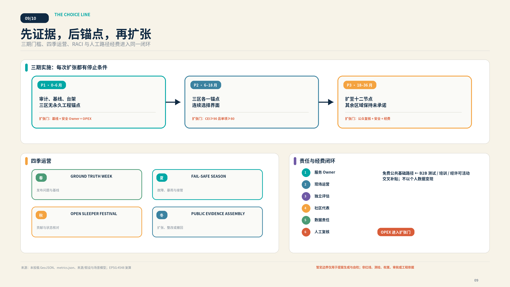
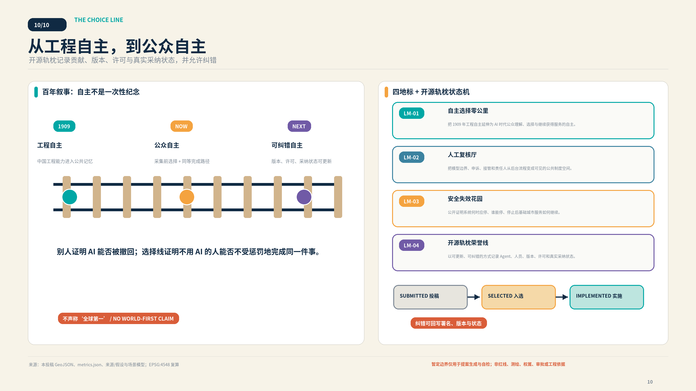
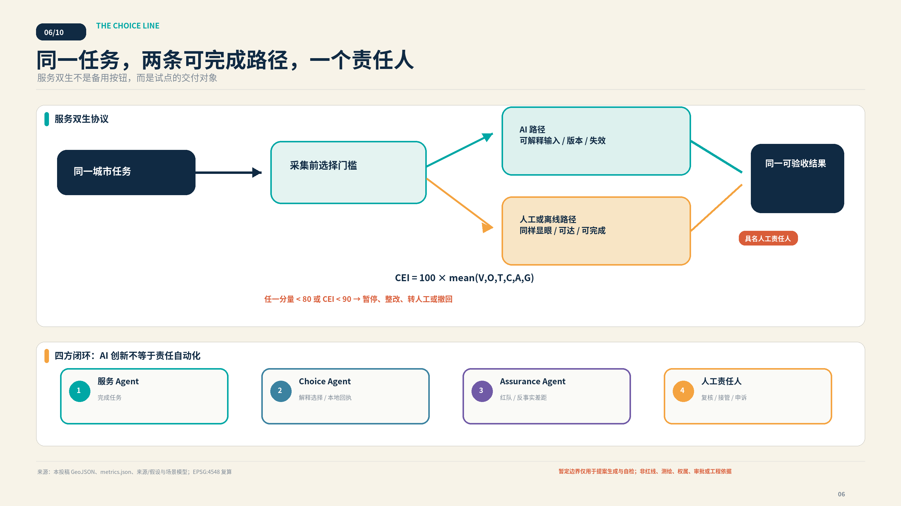
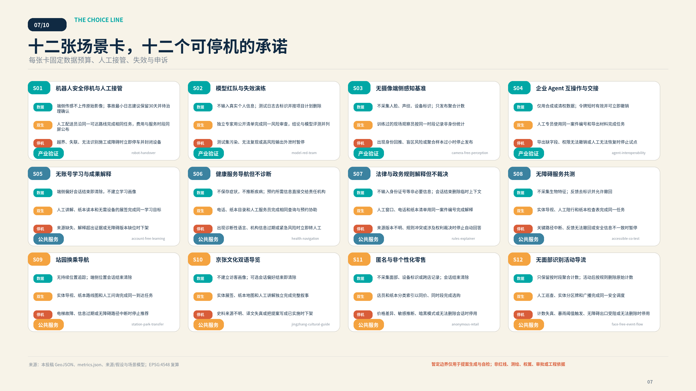
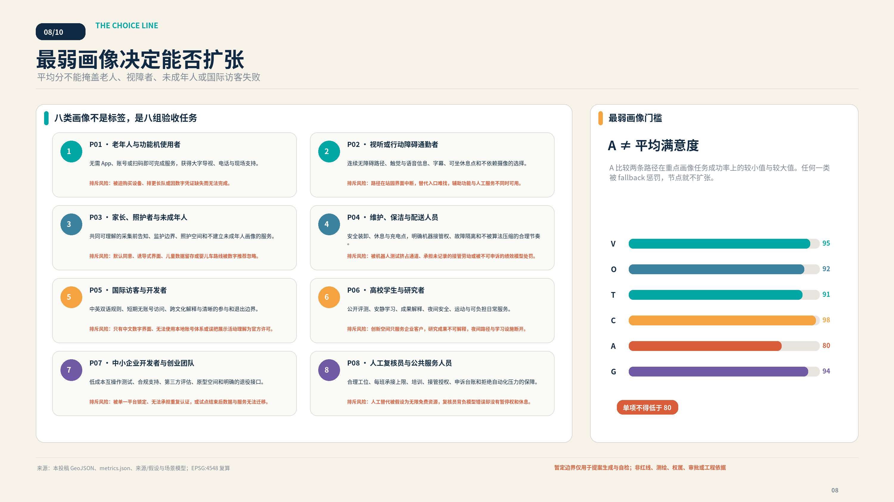

机器人安全停机与人工接管
在受控园路完成低速配送并在风险触发时安全交给人。
人工配送员沿同一可达路线完成相同任务，费用与服务时段同屏公布一条实证步道 · 三座选择实验场 · 十二个服务双生节点 · 一套可公开纠错的城市协议
暂定边界 · 非审定规划 · 待基线实测总览地图使用仓库暂定粗略几何，只突出设计意图、证据链和三层尺度；无商业底图、遥感影像或未公开空间数据。


三区形成失效发现—公众复核—真实服务验收流水线；用地 polygon 闭合无叠，交通慢行是一条步道上的双接口，不是两条工程轨道。


绿脊、节点广场、概念建筑与三期更新来自同一几何。水务容量、建筑强度和真实地块拆改留保持未知，等待专业深化。


AI 场景不是功能清单：每项都有采集前告知、最小数据、人工或离线路径、具名责任人、失效停机、退出申诉和 CEI。



在受控园路完成低速配送并在风险触发时安全交给人。
人工配送员沿同一可达路线完成相同任务，费用与服务时段同屏公布在上线前复现有害输出、泄露、偏差与错误接管。
独立专家用公开清单完成同一风险审查，结论与模型评测并列验证不采集人脸与身份能否完成占用、障碍和排队辅助。
训练过的现场观察员按同一时段记录非身份统计证明服务可导出、换供应商并在故障时转给人工。
人工专员使用同一案件编号和导出材料完成任务让公众理解沿线 AI 成果、证据和适用边界。
人工讲解、纸本读本和无需设备的展签完成同一学习目标解释公开机构、开放时段、预约和无障碍到达方式。
电话、纸本目录和人工服务员完成相同查询与预约协助把公开规则转成可理解的办事步骤并标明责任机关。
人工窗口、电话和纸本清单用同一案件编号完成解释由残障使用者共同验收路径、导视、求助与双模式切换。
实体导视、人工陪行和纸本检查表完成同一任务在不承诺工程线位的前提下组合步行、骑行与公共交通。
实体导视、纸本路线图和人工问询完成同一到达任务连接京张铁路、詹天佑、中关村创新与 AI 自我约束叙事。
实体展签、纸本地图和人工讲解独立完成完整叙事比较不建立个人画像的商品发现与人工选购。
店员和纸本分类索引以同价、同时段完成选购用聚合计数辅助活动、遮荫和暴雨双模式空间调度。
人工巡查、实体分区牌和广播完成同一安全调度CEI = 100 × mean(V,O,T,C,A,G). 试点建议 CEI≥90 且单项≥80；这是待基线实测的提案目标，不是政府标准。

self_check.json 是权威状态；边界提示是预期 minor，不阻断内容评分。
OFFICIAL-ANNOUNCEMENT AGENT-TASKBOOK BOUNDARY-SOURCE CASE-SG-ASSURANCE CASE-GOVUK-ASSISTED CASE-ROTTERDAM-WATER
A-PROVISIONAL-001 A-CONTROLS-001 A-BASELINE-001 A-HUMAN-LABOR-001 A-CLIMATE-001 A-PRIVACY-001